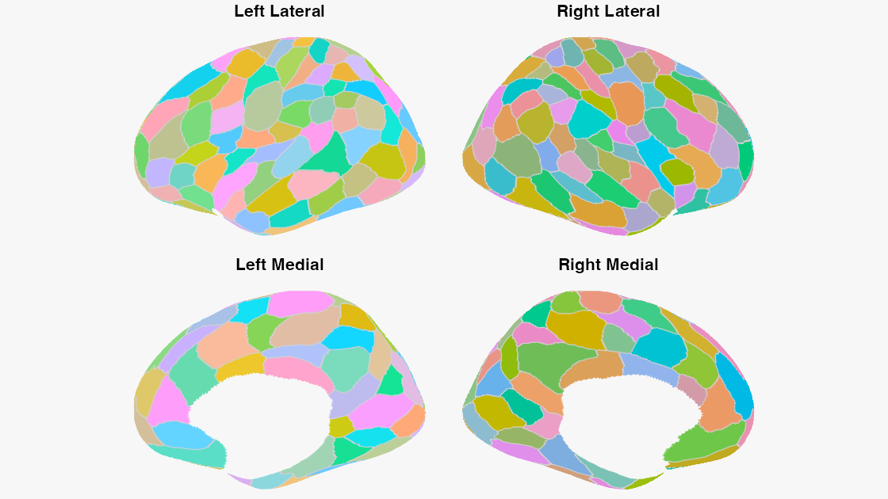

neuroatlas provides a unified interface for working with neuroimaging atlases and parcellations in R. Whether you’re conducting ROI-based analyses, visualizing brain data, or integrating different parcellation schemes, neuroatlas streamlines these tasks with consistent, user-friendly functions.
Features
- Many built-in atlases: Schaefer (100-1000 parcels), Brainnetome (246 regions), Glasser (360 regions), Harvard-Oxford, Julich-Brain, FreeSurfer ASEG, harmonized TemplateFlow/AtlasPack subcortical atlases, Olsen MTL, and probabilistic visual-cortex atlases (Wang 2015, visfAtlas, cytoarchitectonic V1-V5)
- Surface & volume: Work with both volumetric and surface-based parcellations through one consistent interface
-
Atlas discovery: Enumerate built-ins with
list_atlases()and load any of them by name withget_atlas() -
ROI analysis: Extract and summarise regions with
get_roi(),map_atlas(),reduce_atlas(), andbatch_reduce() -
Atlas operations: Combine and reshape parcellations with
merge_atlases(),filter_atlas(),dilate_atlas(),atlas_overlap(), and resampling across spaces/resolutions -
Spatial queries: Look up parcels by world, voxel, or MNI coordinate with
query_point(),query_coord(), andquery_vox() -
Network & graph tools:
atlas_connectivity(),atlas_graph()/as_igraph(),atlas_hierarchy(), andspin_test()spatial null models -
TemplateFlow integration: Access standardized templates through the pure-R
templateflowbackend -
Visualization: Publication-quality surface figures with
plot_brain()/plot_brain_grid(), perceptually-optimised ROI palettes, the ggseg ecosystem, and an interactivecluster_explorer()Shiny app -
Provenance: Every atlas carries structured space, family, and source metadata (
atlas_ref(),atlas_provenance())
Installation
You can install the development version from GitHub:
# install.packages("pak")
pak::pak("bbuchsbaum/neuroatlas")TemplateFlow Setup
TemplateFlow access uses the imported pure-R templateflow package. No Python or reticulate setup is required:
neuroatlas::tflow_spaces(pattern = "^MNI")
neuroatlas::show_templateflow_cache_path()Quick Start
library(neuroatlas)
# Get a Schaefer atlas (200 parcels, 7 networks)
schaefer <- get_schaefer_atlas(parcels = 200, networks = 7)
print(schaefer)
#> ══ Schaefer Atlas ══════════════════════════════════════════════════════════════
#> Name: Schaefer-200-7networks
#> Dimensions: 182 x 218 x 182
#> Regions: 200
#> Networks: 7
#> Hemispheres: left: 100, right: 100
#> Unique networks: 7
# Extract a specific ROI by label (e.g. the first visual parcel)
roi <- get_roi(schaefer, "Vis_1")
# Get Glasser atlas
glasser <- get_glasser_atlas()
# Access templates via TemplateFlow
mni_brain <- get_template("MNI152NLin2009cAsym", variant = "brain")Discovering and loading atlases
# See every built-in atlas
list_atlases()
# Load any of them by id (with loader-specific arguments)
schaefer <- get_atlas("schaefer2018", parcels = "100", networks = "7")Palette demos
neuroatlas includes perceptually-optimised palettes for atlas ROIs. For instance, you can generate a slice-aware palette for the Schaefer 200×7 atlas and feed it directly into plot_brain():
library(neuroatlas)
schaefer <- get_schaefer_atlas(parcels = 200, networks = 7)
colors <- atlas_roi_colors(
schaefer,
method = "maximin_view",
seed = 1
)
schaefer_surface <- schaefer_surf(parcels = 200, networks = 7)
plot_brain(
schaefer_surface,
colors = colors,
interactive = FALSE,
style = "ggseg_like"
)
Available Atlases
| Atlas | Function | Description |
|---|---|---|
| Schaefer | get_schaefer_atlas() |
Cortical parcellations (100-1000 regions, 7 or 17 networks); surface via get_schaefer_surfatlas()
|
| Brainnetome | get_brainnetome_atlas() |
246-region connectional atlas with Yeo network and cytoarchitectonic metadata |
| Glasser | get_glasser_atlas() |
360-region multi-modal cortical parcellation (surface via glasser_surf()) |
| Harvard-Oxford | get_harvard_oxford_atlas() |
Cortical/subcortical structural atlases via TemplateFlow or FSL |
| Julich-Brain | get_julich_brain_atlas() |
FSL Julich-Brain cytoarchitectonic atlas |
| ASEG | get_aseg_atlas() |
FreeSurfer subcortical segmentation |
| Subcortical | get_subcortical_atlas() |
Harmonized thalamus, cerebellum, and subcortex atlases (AtlasPack/TemplateFlow) |
| Olsen MTL | get_olsen_mtl() |
Medial temporal lobe atlas with hippocampal subfields |
| Wang (2015) | get_wang_atlas() |
Probabilistic visual topography on fsaverage (25 areas/hemi); probability volumes via get_wang_prob_atlas()
|
| visfAtlas | get_visfatlas() |
Probabilistic functional atlas of occipito-temporal visual cortex (33 regions) |
| Visual V1-V5 | get_visual_atlas() |
Cytoarchitectonic early visual areas extracted from Julich-Brain |
Documentation
- Getting Started - Introduction and basic usage
- Atlas Visualization with Optimal Colours - Perceptually-optimised ROI palettes
-
Surface Panel Figures - Static panel composition with
plot_brain()andplot_brain_grid() - Surface Templates - Geometry vs. data on surface meshes
- Surface Parcellations - Surface-based atlas operations
- Working with TemplateFlow - Template access and management
- Function Reference - Complete API documentation
Albers theme
This package uses the albersdown theme. Existing vignette theme hooks are replaced so albers.css and local albers.js render consistently on CRAN and GitHub Pages. The defaults are configured via params$family and params$preset (family = ‘red’, preset = ‘interaction’). The pkgdown site uses template: { package: albersdown } together with generated pkgdown/extra.css and pkgdown/extra.js so the theme is linked and activated on site pages.